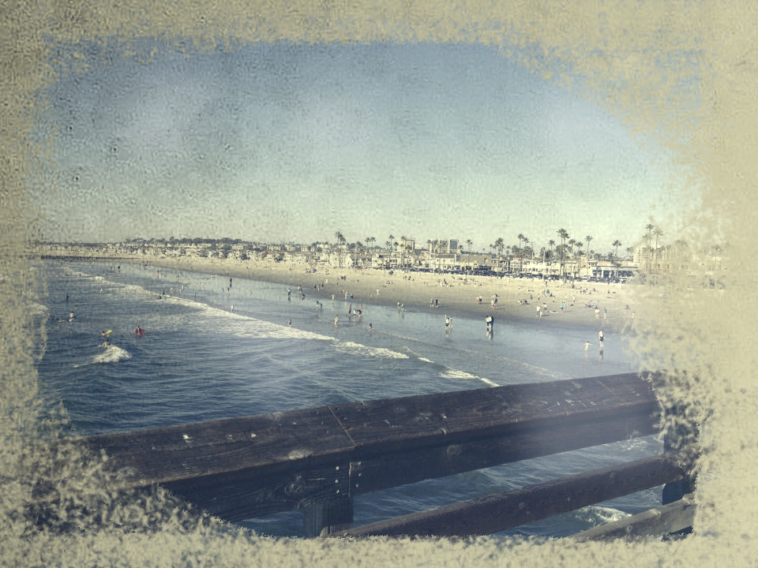
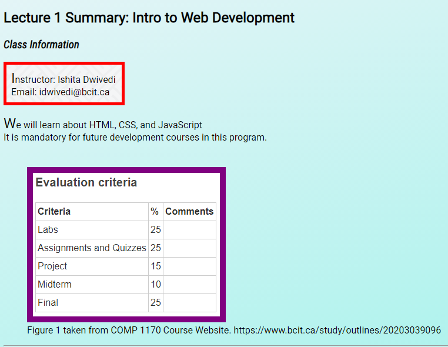
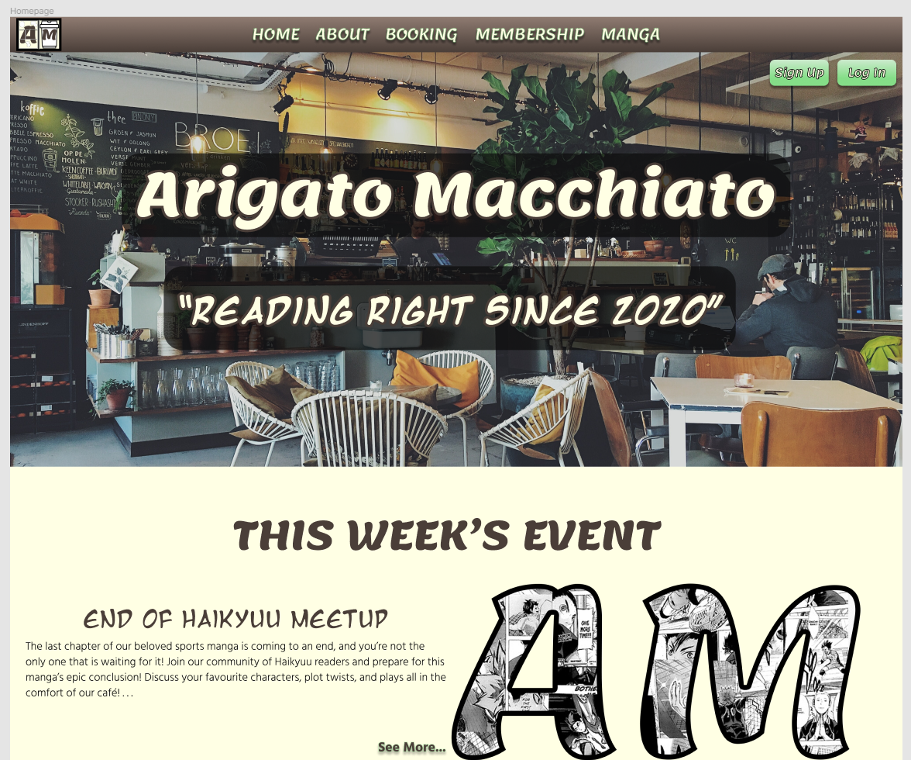

“The past is just the past. There’s no inherent value in getting over it or catching up to it.”

This is a Photoshop exercise with a focus on learning brush settings, blending options, and gradient patterns. We applied this to turn a modern image into an older, more rustic photo.

This is an early exercise that had a focus on simple CSS. We created a midterm review website with various styling techniques integrated to give it a more appealing look.
This is a midterm exercise for Interface Design Usability. We analyzed an existing website with design flaws and recreated our own version of the website in Figma with fixes to its accessbiility and usability.

This is a midterm project for Design Fundamentals. We designed a non-responsive webpage for an imaginary manga café with realistic links and features.